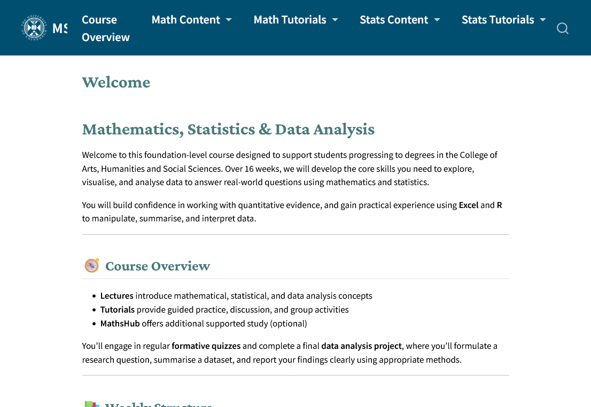
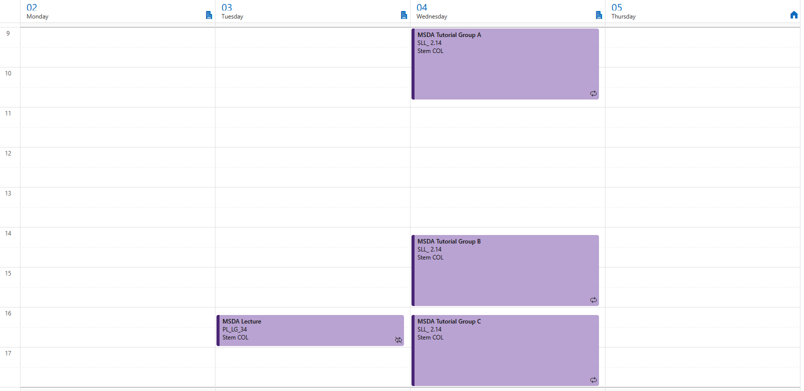
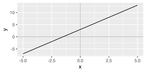
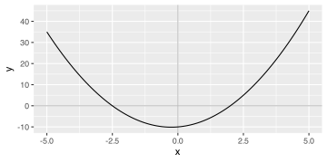
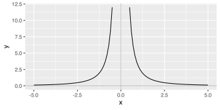
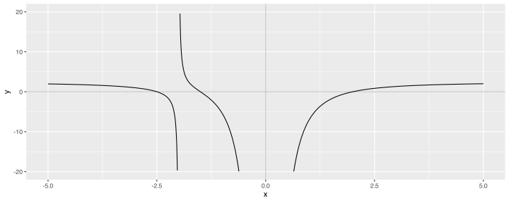
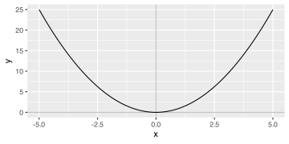
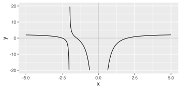
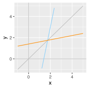
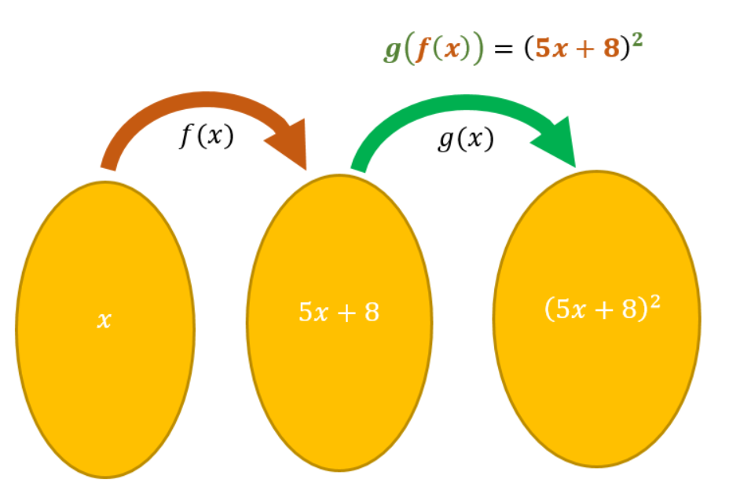

Algebra & Functions
Lecture 1 - FNDN07012
Logistics
Introduction
Welcome to FNDN07012,
Mathematics, Statistics and Data Analysis for Arts, Humanities and Social Sciences
or MSDA for short.

This course equips you with the maths and stats necessary for undergraduate study in subjects including Architecture, Business, Finance, Economics, Psychology, Sociology.
Teaching Team
This course is taught by Josh (7 weeks of maths) and Javiera (9 weeks of stats).
Speaker notes go here.
Class & Assessment

The assessment is 40% an in-class test on maths skills and 60% on a data analysis project.
More information on DRPS and Learn page.
Algebra Recap
Speaker notes go here.
Linear Equations
An equation in a variable \(x\) is linear it has the algebraic form \(y = mx + c\), where \(m\) is the gradient of the line and \(c\) is the \(y\)-intercept.

A linear equation \(mx + c = 0\) only has one solution: \(x = -\frac{c}{m}\).
Example
The equation \(2x + 3 = 0\) has the solution \(x = -\frac{3}{2} = -1.5\).
Speaker notes go here.
Quadratic Equations
An equation in a variable \(x\) is quadratic it has the algebraic form \(y = ax^2 + bx + c\), where \(a\), \(b\), and \(c\) are some numbers and \(a\neq0\).

A quadratic \(ax^2 + bx = 0\) has no, one, or two solutions, given by \(x = -\frac{-b \pm \sqrt{b^2 - 4ac}}{2a}\).
Example
The quadratic \(y = 2x^2 + x - 10\) has solutions \(x = \frac{-1 \pm 9}{4}\). That is, the solution is \(x = \frac{8}{4} = 2\) or \(x = -\frac{10}{4} = -2.5\).
Speaker notes go here.
Negative Exponents
Raising a variable to a negative power is the same as taking the reciprocal of the positive power (e.g. \(x^{-3} = \frac{1}{x^3}\)).

Care is needed with negative exponents because we want to avoid dividing by zero.
Example
The curve \(y = 3x^{-2} = \frac{3}{x^2}\) has a singularity at \(x = 0\), since it is undefined for that value.
Speaker notes go here.
Combined Example
Real graphs are often messier though, with multiple solutions and singularities.

To make it easier to work with these, we turn to a concept called functions.
Speaker notes go here.
Functions
Speaker notes go here.
Function Machines
You might remember the idea of a “function machine” from school.
{kind=link}
Example
If we define our function machine as \(x+1\), then for any input \(x\) we put into the machine we will get one more as the output. For example, we might have ‘INPUT 3 \(\rightarrow \boxed{x+1} \rightarrow\) OUTPUT 4’.
This is a simplified version of our formal mathematical functions.
Speaker notes go here.
Example Function
We can take the previous example
Example
If we define our function machine as \(x+1\), then for any input \(x\) we put into the machine we will get one more as the output. For example, we might have ‘INPUT 3 \(\rightarrow \boxed{x+1} \rightarrow\) OUTPUT 4’.
and formally define this as a mathematical function
\[\begin{equation} f(x) = x+1. \end{equation}\]
Here \(f(x)\) represents what we get as the function output when we use ‘\(x\)’ as input. Using this notation we could replace ‘INPUT 3 \(\rightarrow \boxed{x+1} \rightarrow\) OUTPUT 4’ with
\[\begin{equation} f(3) = 3 + 1 = 4. \end{equation}\]
Speaker notes go here.
Inputs & Outputs
We previously looked at quadratics like \(y = x^2\). We could define this curve via a function, \(y = f(x) = x^2\). From the plot, see how \(x\) and be any real number \(\mathbb{R}\), but \(x^2\) can only be positive numbers \(\mathbb{R}^{\geq0}\).

To specify these, we may then amend our definition to
\[\begin{equation} f(x) = x^2,\ f:\mathbb{R}\rightarrow\mathbb{R}^{\geq0}. \end{equation}\]
Our set of all possible input values are more formally called the domain of \(f\), and the set of possible outputs is the range of \(f\).
Speaker notes go here.
Full Examples
We can use this notation for the other examples used previously.

Tip
In maths, you will often come across equivalent notations that are all shorthand for the same idea.
As an example, the notation \(\mathbb{R}\backslash\lbrace0\rbrace\) above means the set of real numbers excluding 0. This could equivalently be written as \(\lbrace x\in\mathbb{R}~:~x\neq0 \rbrace\), which as read would be ‘\(x\) in the real numbers such that \(x\) is not equal to zero’. Using either is correct!
Speaker notes go here.
Inverses
When functions model real world process, it’s useful to know how to reverse them. In the language of function machines, how do we find the input that produced some output?
Mathematically, we want to find the function \(f^{-1}\) such that \(x = f^{-1}(y)\).
Example
For simple cases we can do this by eye: \(f(x) = x+1\) is “reversed” by the function that subtracts one: \(f^{-1}(x) = x - 1\).
It isn’t always usually possible to just ‘see’ what \(f^{-1}\) will be though, so for that we need other methods we can use to reliably find the answer.
Warning
While inverses use the same notation as reciprocals, \(f^{-1}\) is not \(\frac{1}{f}\). For example \(f(x) = x+1\) isn’t reversed by \(g(x) = \frac{1}{x+1}\).
Speaker notes go here.
Finding the Inverse
The method for finding the inverse of \(f\) is:
- Write \(y = f(x)\),
- Swap all appearances of \(x\) and \(y\),
- Rearrange the subject to \(y\) again,
- Replace the \(y\) with \(f^{-1}(x)\).
Warning: Removed 81 rows containing missing values or values outside the scale range
(`geom_function()`).
This works because the inverse is the ‘mirror’ of the original function in the line \(y = x\).
Example
To find the inverse of \(f(x) = 5x - 7\), we first write \(y = 5x - 7\). After swapping \(x\) and \(y\) we have \(x = 5x - 7\). Rearranging to make \(y\) the subject gives \(y = \frac{1}{5}x + \frac{7}{5}\), and so \(f^{-1}(x) = \frac{1}{5}x + \frac{7}{5}\).
Speaker notes go here.
Compositions
We can also combine functions. In the language of function machines, this means taking the output of one function and immediately using it as input for another function.
Example
Consider the functions \(f(x) = x+1\) and \(g(x) = 2x\). The composition \(f\circ{}g\) is defined as \[\begin{equation} f(g(x)) = f(2x) = 2x + 1. \end{equation}\] i.e. we took the output of \(\boxed{2x}\) and used it as the input of \(\boxed{x+1}\).
This introduces ‘\(\circ\)’ as notation for function compositions. Note that \(f\circ{}g \neq g\circ{}f\).
Example
The composition \(g\circ{}f\) is defined as \[\begin{equation} g(f(x)) = g(x+1) = 2(x + 1) = 2x + 2. \end{equation}\]
Speaker notes go here.
Decompositions
Just as compositions combine functions, decompositions can break them apart.
Example
Consider \((5x+8)^2\). Here the expression ‘\(5x+8\)’ is nested within another function. We can think of it as the ‘inside’ function. The outside function is \(x^2\).

A possible decomposition of this function would be \(f(x) = 5x + 8\), \(g(x) = x^2\).
Speaker notes go here.